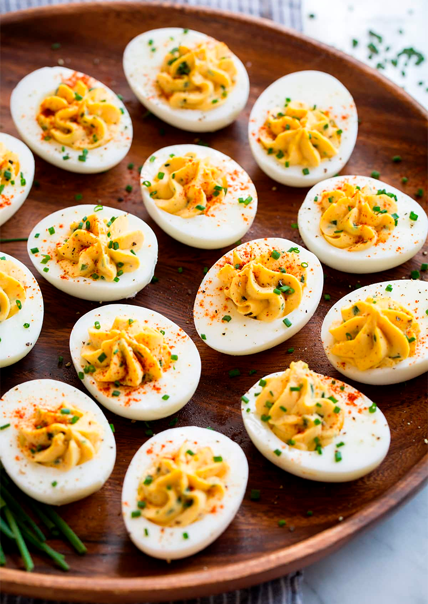

Huevos rellenos

- Huevos (uno por persona)
- Mayonesa (una cucharada sopera)
- Mostaza (una cucharada)
- Un pellizco de sal
- Un pellizco de pimienta
Hierve los huevos durante 30 segundos, baja un poco el fuego y cuécelos durante 12 minutos. Déjalos reposar en un bol de agua con hielo. Pélalos y córtalos por la mitad, a lo largo, y vacía las yemas en un recipiente, donde añadirás también mayonesa, mostaza, sal y pimienta. Con una manga pastelera para mejorar la presentación, pipetea la mezcla en cada hueco. Opcionalmente decora con cebollino y pimentón.
Muffins de huevo
- 8 Huevos
- 4 Cebolletas
- 150 g de Requesón
- 1 Tomate
- 4 cs de Queso parmesano rallado
- Sal
- Pimienta negra
- Mantequilla
- Pan rallado
Preparación:
Nombre de la receta
- Ingrediente 1
- Ingrediente 2
- Ingrediente 3
- Ingrediente 4
Instrucciones
Nombre de la receta
- Ingrediente 1
- Ingrediente 2
- Ingrediente 3
- Ingrediente 4
Instrucciones